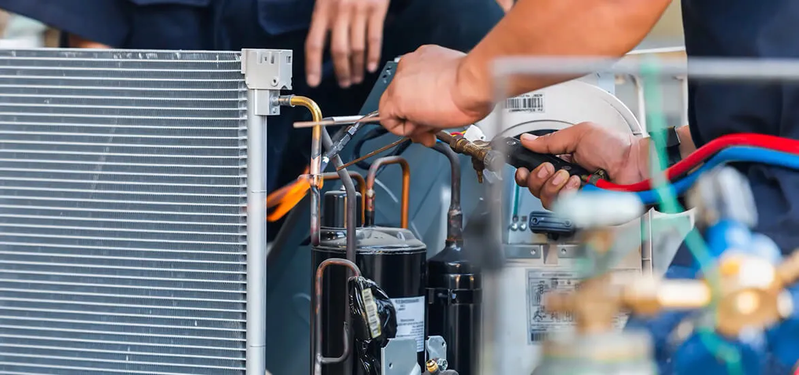

Effective Tips on Handling Emergency HVAC Repairs With Little Stress

The HVAC system in your home is wholly responsible for maintaining a comfortable atmosphere no matter how the weather is outside. In other words, they can be your reliable partners if you offer a little attention to your HVAC system.
But sometimes, the unwanted or unexpected problem of the HVAC unit can cause a lot of stress, especially when it is cold outside and your home is freezing like anything. However, it is true that not all breakdowns are avoidable, but there are various things which you can do to reduce the chances of calling a professional to repair the water heater.
So, let’s deep dive into some tips which will help you to tackle or prevent emergency HVAC repair services in Orange County with little stress:
How To Prevent Emergency HVAC Repairs
1. Call Experts To Check & Service Your HVAC Unit Bi-annually
This is essential as you have to clean filters, vents, coils, and ducts to remove dirt and debris. If required, you need to change air filters as well. Also, you need to check coolant, leakage, external unit, and more to ensure smooth functioning of the HVAC system. So, call professionals in Orange County for Heating and Air Conditioning maintenance services of your HVAC system on a regular basis at least twice a day. By doing so, you can keep away costly repairs, sudden breakdowns, and early replacements.
Experts will check your system to ensure whether it is working efficiently or not. They will also clean the unit. Hence, you can save on utility bills and prevent possible failures. However, there are various parts that will be inspected by HVAC experts, like the drainage system, evaporator coil, drain pan, etc. You will get guaranteed service for the Heating and Air Conditioning system in Orange County.
2. Seal Air Leaks & Ducts
This step will ensure that no air will be lost in the duct system. However, it will not only help you save money on the electricity bill, but it will keep you away from many maintenance issues and emergency repairs.
Moreover, keep in mind that vents should not be closed; otherwise, the air conditioner will turn off altogether, resulting in coil freezing.
3. Replace The Air Filters
No matter what is the time of the year, it is essential to replace or clean the air filters. This step will prevent crucial air conditioner components from being damaged.
Moreover, due to clogged or dirty air filters, some of the HVAC systems will even shut down, so clean them regularly as they also reduce the energy consumption by up to 15%. Also, dirty air filters can not purify the air. So you can face health issues due to poor air quality.
4. Clean The Outdoor Unit
The condenser of the HVAC unit is placed in the exterior unit, which keeps your house cool or hot according to the weather condition. Both vents and cooling filters can get blocked due to dust and mites. Apart from that, leaves and bigger debris may also make their way to create a barrier, which prevents the vents from discharging warm or cold air. Thus it will put additional strain on the unit.
So, always keep in mind that you need to clean and maintain your HVAC system from time to time from a professional in Orange County.
5. Close Blinds & Curtains During Day Time
If you keep the blinds and curtains closed during the daytime, the rays of the sun can not enter inside, and your HVAC system will work in a better way. Also, you can restrict dirt and debris entering your HVAC system.
6. Give A Break To The System
When you feel cold, it becomes tempting to increase the temperature of your AC to make your room or home warmer. But, if you do this step frequently, it will put extra stress on the heating system and increase the chances of wear and tear.
So, to prevent it, keep the thermostat as close to the outdoor temperature. Also, check for leaks in windows and doors that allow the cold breeze to enter.
7. Keep Eye On Warning Signs
Your HVAC system will indeed show some signs before it breaks down and needs emergency repair. In most homes, people overlook these signs. But if you want to get rid of severe HVAC troubles, keep an eye on the signs like: -
- Hot and cold spots in the home
- Unpleasant odors
- Frequent on and off cycling
- A weak airflow
- Loud noise
- High energy bills
These signs indicate your system is not working well. In this case, call a professional as soon as possible so that they will do the needful.
8. Program The Thermostat
If you constantly adjust your HVAC thermostat, you will put pressure on your heating system and waste energy. So, to avoid this, try to wait for at least eight hours before you change the temperature. No matter if you have the latest state-of-art thermostat, it will not do any good if you don't use it properly. In short, if you properly program your thermostat, then only your heating system will work efficiently.
9. Schedule Repairs As Soon As Possible
There are very few chances that you can fix the HVAC system correctly using DIY techniques. However, many people repair small issues to HVAC systems thinking that they are capable of doing it. But at times, the minor problems will end in costly repair if not fixed properly. So, schedule an appointment with HVAC repair experts in Orange County instantly if you have something wrong with the system.
Thus, now, you know how to prevent emergency HVAC repair. It's time to find out the best way to handle emergency HVAC repair with little stress.
Proven Ways To Handle Emergency HVAC Repair With Little Stress
Repairing an HVAC system is not a cakewalk, which you can do by reading manuals or watching videos. You need the assistance of professional people who have adequate experience in this field. But before you hire a heating and air conditioning repair expert in Orange County, make sure to tick the below checklist:
Things To Consider When Hiring HVAC Repair Professionals
1. Check Certification
When it comes to the repair of your HVAC system, it becomes imperative to hire a certified technician so that the work is done flawlessly. Professionals have adequate experience, thorough knowledge of all models and brands, and precisely know what needs to be done. So, you can rest easy when the certified professionals are there to assist.
2. Look For Insurance And License.
When you plan to call a company to service your HVAC system, never contact a technician who isn't insured and licensed. Both these things are necessary as they will help you get the loss in case of damage during the service.
Apart from that, the license proves that the company is legitimate to offer professional services.
3. Sign Up A Maintenance Agreement
When you call the professional HVAC repair company in Orange County, ask them to offer a regular maintenance plan or any such agreement that can offer you privileges. This will help your system to remain intact, and you don't have to wait for an emergency repair.
The Bottom Line
So, you are thorough with the tips to avoid emergency HVAC repair and proven ways to handle the HVAC repairs with little stress. However, the professionals do understand the consequences of delays in emergency HVAC repair services. So, they are well-equipped 24x7 to offer repair services whenever you need them. Hence, whether you want installation or repair services, it is best to call a professional HVAC technician in Orange County.